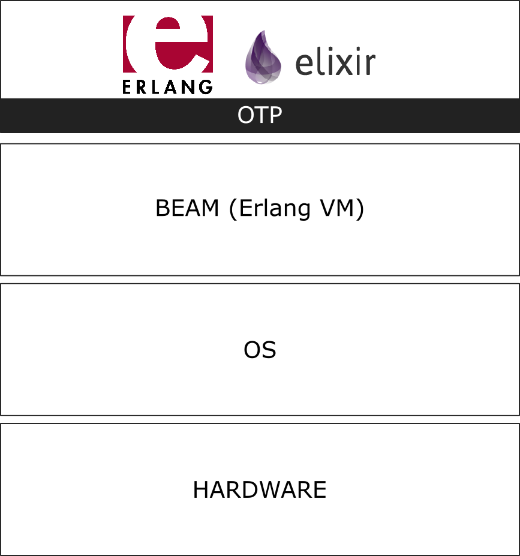
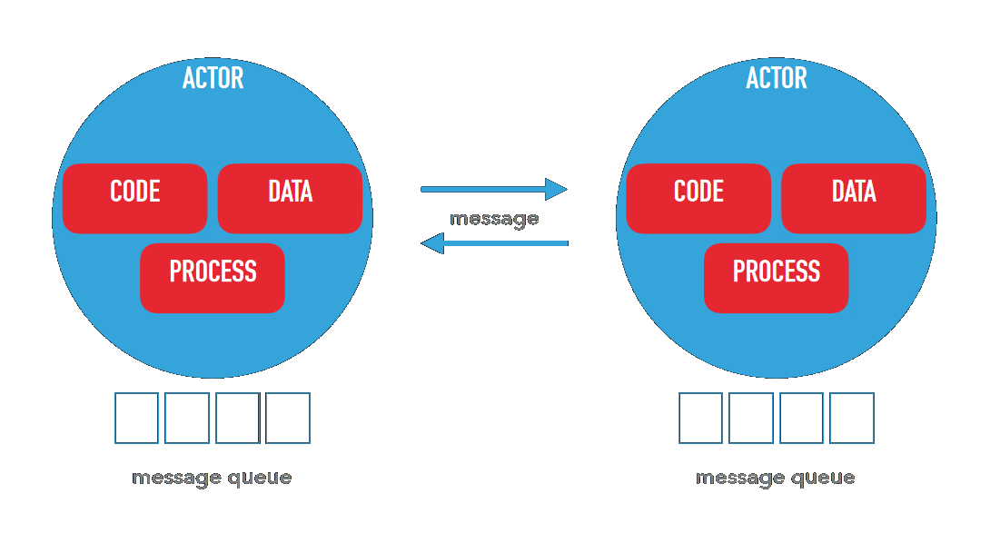
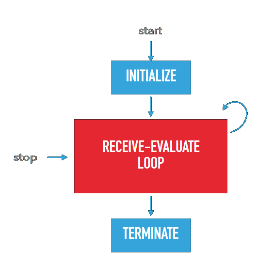
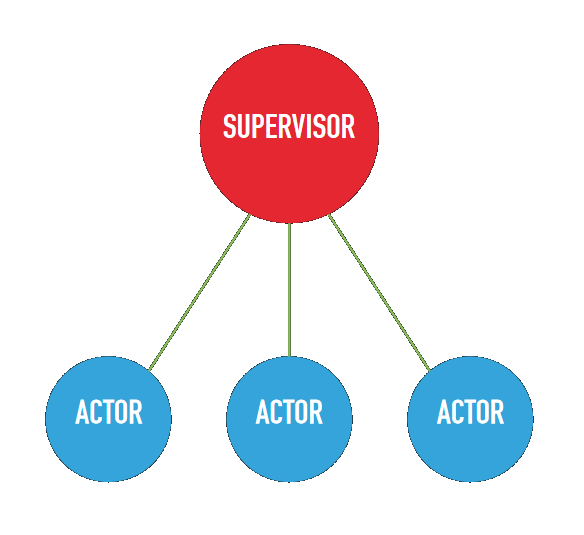
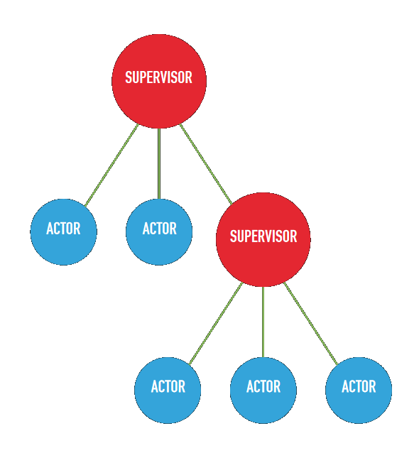

<!doctype html>
<html lang="en">
    <head>
        <meta charset="utf-8">
        <meta name="viewport" content="width=device-width, initial-scale=1.0, maximum-scale=1.0, user-scalable=no">

        <title>Elixir Presentation</title>
        <link rel="stylesheet" href="./css/reveal.css">
        <link rel="stylesheet" href="./css/theme/black.css" id="theme">
        <link rel="stylesheet" href="./css/highlight/zenburn.css">
        <link rel="stylesheet" href="./css/print/paper.css" type="text/css" media="print">
          <link rel="stylesheet" href="./assets/custom.css">


    </head>
    <body>

        <div class="reveal">
            <div class="slides"><section  data-markdown><script type="text/template"><link rel="stylesheet" href="https://use.fontawesome.com/releases/v5.0.13/css/all.css" integrity="sha384-DNOHZ68U8hZfKXOrtjWvjxusGo9WQnrNx2sqG0tfsghAvtVlRW3tvkXWZh58N9jp" crossorigin="anonymous">
<h1 class="title">Elixir</h1>
</script></section><section  data-markdown><script type="text/template">
<h4>The Erlang Stack</h4>

</img>


<span class="didyouknow"><i class='fas fa-info-circle'></i>BEAM = Bogdan/Björn's Erlang Abstract Machine</span>
<span class="didyouknow"><i class='fas fa-info-circle'></i>OTP = Open Telecom Platform</span>
</script></section><section  data-markdown><script type="text/template">
<div class="left half">
    <br>
    Created in 1987 by Ericsson<br>
    <br>
    Latest Version : 21.3 (April 2019)
</div>

<div class="right half">
    <br>
    Created in 2012 by José Valim Hernàndez<br>
    <br>
    Latest Version : 1.8.1 (January 2019)
</div>
</script></section><section  data-markdown><script type="text/template">
<h4 class="title">The Erlang Core Principles</h4>

<p class="t">
<span class="hl title">Dynamic typing & functional paradigm</span><br>
Data is entirely immutable, which is really usefull for efficient parallelism.
<br><br>
<span class="hl title">Actor Model</span><br>
Actors are independent processes that have their own code, data and state.
<br><br>
<span class="hl title">BEAM</span><br>
The BEAM VM is built to run on very different supports from low-powered ARM cores to a cluster of high performance x64 beasts. It introduces the notion of <b>green thread</b>, a very light-weight process, as well as preemptive scheduling and garbage collection.
</p>
<br><br>
<span class="hl title">OTP</span><br>
This "standard library" is built around the core ideas of <b>concurrency, fault tolerance and distribution</b>.
</p>
</script></section><section  data-markdown><script type="text/template">
<h4 class="title">Actor Model</h4>

Normal functional programs :

</img>
</script></section><section  data-markdown><script type="text/template">
<h4 class="title">Actor Model</h4>

Erlang :

</img>
</script></section><section  data-markdown><script type="text/template">
<h4 class="title">Actor Model</h4>

Actors have lifcecycles

</img>
</script></section><section  data-markdown><script type="text/template">
<h4 class="title">Actor Model</h4>

Actors have supervisors

</img>
</script></section><section  data-markdown><script type="text/template">
<h4 class="title">Actor Model</h4>

Supervisors have supervisors

</img>
</script></section><section  data-markdown><script type="text/template">
<h4 class="title">Actor Model</h4>

<br>

<p class="t" style="padding-left:300px;">
"Erlang was designed for<br>
wiriting concurrent programs<br>
that run <b class="hl">forever</b>."<br>
</p>
<i style="font-size:0.6em !important;right:150px;position:absolute;">A History of Erlang - Joe Amstrong</i>

<br>

<small>
With Erlang, Ericsson managed to get a telecom switch to 9-nines availability.<br>
That is less than 1s downtime over 20 years.
</small>
</script></section><section  data-markdown><script type="text/template">
<h4 class="title">OTP</h4>

<br>

OTP is a large library that implement<br> <b class="hl">behaviours</b> that can be<br>
reused to write Erlang code.
</script></section><section  data-markdown><script type="text/template">
<h4 class="title">Elixir</h4>

<br>

Elixir is just a new syntax that compiles down to BEAM instructions.<br>
Elixir and Erlang are entirely interoperable.
</script></section><section  data-markdown><script type="text/template">
https://wandbox.org/
</script></section><section  data-markdown><script type="text/template">
Hello, world !

```
defmodule MyFirstModule do
    def myfirstfunction() do
        IO.puts "Hello, world !"
    end
end

MyFirstModule.myfirstfunction
```
</script></section><section  data-markdown><script type="text/template">
Pattern matching is very common in FP.<br>
Elixir has special syntax to use it in functions :

```
defmodule Users do
    def login("alice", "al1c3s3cure"):
        IO.puts "Welcome, Alice !"
    end
    def login("bob", "b0bs3cure"):
        IO.puts "Welcome, Bob !"
    end
    def login(_, _):
        IO.puts "Unknown user or bad password..."
    end
end
```
</script></section><section  data-markdown><script type="text/template">
Elixir is just a syntax over Erlang.<br>
This means every Erlang library is available :

```
defmodule Wait do
    def long_calculation() do
        :timer.sleep(3000)
    end
end
```
<span class="didyouknow"><i class='fas fa-info-circle'></i>Notice how Wandbox times out at 5 seconds</span>
</script></section><section  data-markdown><script type="text/template">
But the best part of the BEAM are still the threads :

```
defmodule Wait do
    ...
end

task1 = Task.async(fn -> Wandbox.hello end)
task2 = Task.async(fn -> Wandbox.hello end)
Task.await(task1)
Task.await(task2)
```
</script></section><section  data-markdown><script type="text/template">
Messaging system :

```
defmodule Actor do
    def listen() do
        IO.puts "Waiting for messages..."
        receive do
            "hello" -> IO.puts "Hi there !"
                       listen
            "bye" -> IO.puts "Bye !"
        end
    end
end

pid = spawn fn -> Actor.listen end
send pid, "hello"
send pid, "bye"
```
</script></section><section  data-markdown><script type="text/template">
Thinking in processes :<br>
- A web session is a process
- A shopping cart is a process
- Every element in a game is a process
</script></section><section  data-markdown><script type="text/template">
A rich ecosystem :

<small class="t">
<p class="hl">Mnesia</p>
Database on the BEAM<br>
<br>
<p class="hl">ETS</p>
Redis on the BEAM<br>
<br>
<p class="hl">Phoenix</p>
NGINX & Ruby on Rails on the BEAM<br>
<br>
</small>
</script></section><section  data-markdown><script type="text/template">
<h4 class="title">Questions ?</h4>
</script></section><section  data-markdown><script type="text/template">
<h6 class="title">Further material</h6>

<div class="left half t">
<p class="hl">Books</p>
- Programming Elixir<br>
- Erlang in Anger
<br>
<br>
<p class="hl">Tutorials</p>
- Elixir Docs<br>
- Elixir Etudes by O'Reilly<br>
- Elm/Phoenix by Pragmatic Studio
</div>

<div class="right half t">
<p class="hl">Podcasts</p>
- Elixir Outlaws<br>
- Elixir Talks
<br>
</script></section></div>
        </div>

        <script src="./lib/js/head.min.js"></script>
        <script src="./js/reveal.js"></script>

        <script>
            function extend() {
              var target = {};
              for (var i = 0; i < arguments.length; i++) {
                var source = arguments[i];
                for (var key in source) {
                  if (source.hasOwnProperty(key)) {
                    target[key] = source[key];
                  }
                }
              }
              return target;
            }

            // Optional libraries used to extend on reveal.js
            var deps = [
              { src: './lib/js/classList.js', condition: function() { return !document.body.classList; } },
              { src: './plugin/markdown/marked.js', condition: function() { return !!document.querySelector('[data-markdown]'); } },
              { src: './plugin/markdown/markdown.js', condition: function() { return !!document.querySelector('[data-markdown]'); } },
              { src: './plugin/highlight/highlight.js', async: true, callback: function() { hljs.initHighlightingOnLoad(); } },
              { src: './plugin/zoom-js/zoom.js', async: true },
              { src: './plugin/notes/notes.js', async: true },
              { src: './plugin/math/math.js', async: true }
            ];

            // default options to init reveal.js
            var defaultOptions = {
              controls: true,
              progress: true,
              history: true,
              center: true,
              transition: 'none', // none/fade/slide/convex/concave/zoom
              dependencies: deps
            };

            // options from URL query string
            var queryOptions = Reveal.getQueryHash() || {};

            var options = {};
            options = extend(defaultOptions, options, queryOptions);
        </script>


        <script>
          Reveal.initialize(options);
        </script>
    </body>
</html>
